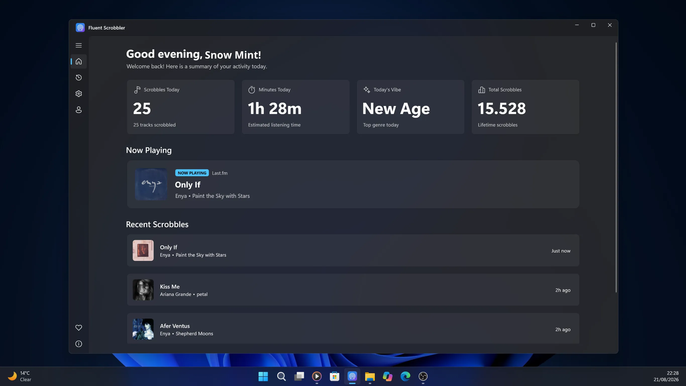
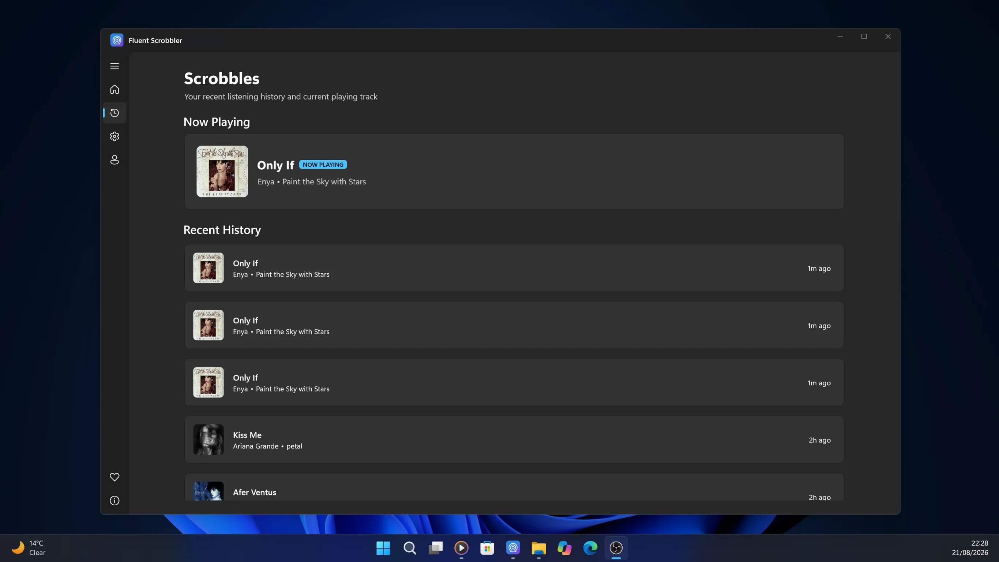
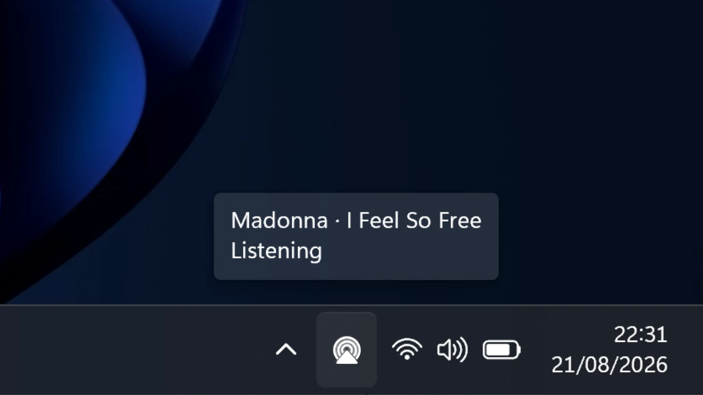
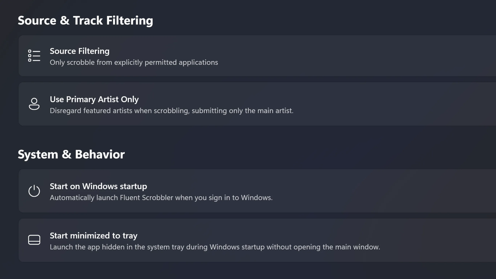
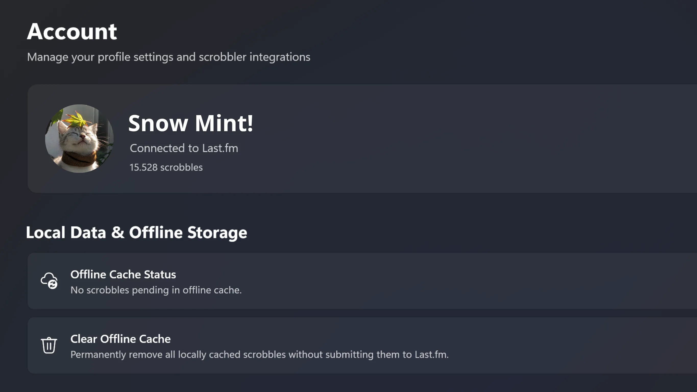

Track what you listen to across all your Windows media players with a clean, native desktop experience.
Download Fluent ScrobblerCurrently in Beta. Core features are fully functional.
Fluent Scrobbler is an independent open-source project and is not affiliated with, endorsed by, or sponsored by Microsoft Corporation or Last.fm.

Browse your complete scrobbling feed in real time directly inside a native Windows interface.
Track submission statuses, view now playing details, and monitor your listening statistics with instant Last.fm synchronization.
Try Fluent Scrobbler Now
Fluent Scrobbler sits quietly in your Windows 11 system tray, capturing playback without interrupting your workflow.
Quickly preview active scrobble status, control the application, or access options with a single click directly from the taskbar.
Try Fluent Scrobbler Now
Tailor your scrobbling experience to fit your setup. Configure ignored apps, playback rules, and startup preferences.
Switch seamlessly between dark, light, and system themes with full support for Windows 11 Mica aesthetics.
Try Fluent Scrobbler Now
Connect your Last.fm account effortlessly with direct authorization, keeping credentials protected in the Windows Credential Locker.
Enjoy full ownership of your data with one-click account disconnection and zero telemetry or background tracking.
Try Fluent Scrobbler Now
Experience seamless native scrobbling today on Windows.
Fluent Scrobbler is an independent open-source project and is not affiliated with Microsoft Corporation or Last.fm.